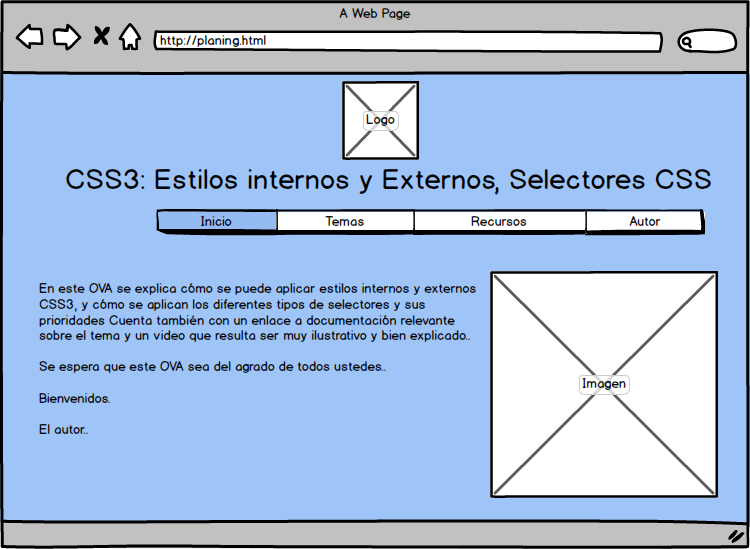

CSS3: Estilos internos y Externos,Selectores CSS
a) Objetivo del sitio:
Objetivo general
Diseñar un Objeto Virtual de Aprendizaje (OVA) con el tema propuesto
CSS3: Estilos internos y Externos,Selectores CSS.
Objetivos específicos
- Realizar Mockup para el tema propuesto.
- Estructurar página WEB con las etiquetas básicas de HTML5.
- Sincronizar carpeta local del sitio web, con el repositorio
en GitHub y publicación del sitio con GitHub Page.
b) Materiales
- Video explicación selectores CSS. Link https://youtu.be/3Qecy46bajU
- Formas de aplicar CSS: interno y externo. link rel y archivos
de extensión css. Link https://www.aprenderaprogramar.com/index.php?option=com_
content&view=article&id=713:formas-de-aplicar-css-interno-y-externo-link-rel-y-
archivos-de-extension-css-comentarios-css-cu01010d&catid=75&Itemid=203
- Imagen uso de selectores CSS. Link https://encrypted-tbn0.gstatic.com/images?q=tbn%3AANd9GcSnCAQkOKzErO5aU0IBMOFeaECzzlA1U_6qUw&usqp=CAU
Maquetación

c) Contenido del sitio
Aplicación de CSS interno.
En esta sección se hablará sobre las diferentes formas de aplicar
estilos CSS internos.
Aplicación de CSS Externos
En esta sección se hablará sobre las diferentes formas de aplicar
estilos CSS externos.
Selectores CSS
En esta sección se hablará sobre las diferentes formas de selectores
y sus combinaciones.